J01 · Three-sided contour
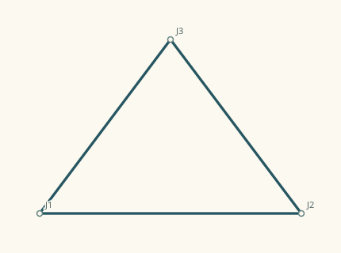
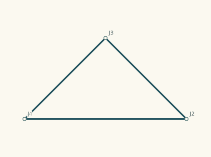
Three actual connected chords close through a shared site.
J02 · Rectangular contour
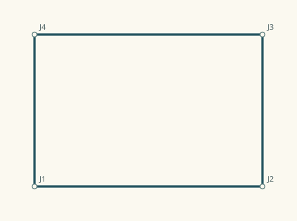
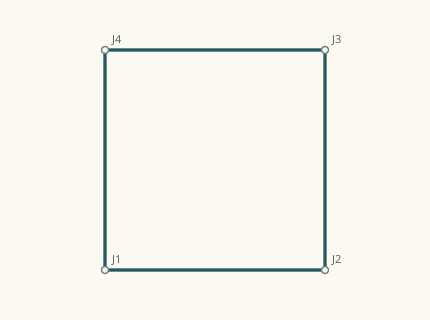
A wide closed path supplies its actual corners and endpoint words; no polygon class is published.
J03 · Diamond contour
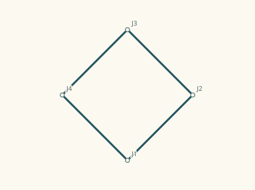
The closed path has diagonal chords. Its orientation is expressed in native words rather than a shape label.
J04 · L-shaped contour
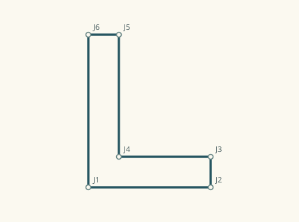
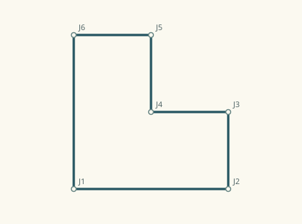
A closed concave outline is authored directly; no parent rectangle is supplied to the receiver.
J05 · One inward return
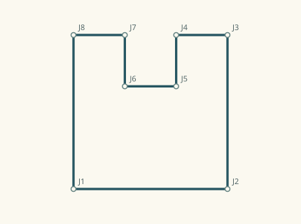
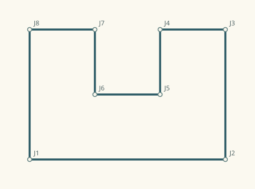
The upper side descends into the enclosure and returns. The receiver must discover this from the actual successive passages.
J06 · Cross-shaped outline
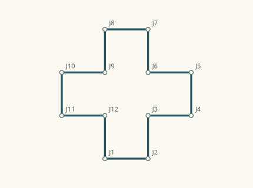
A single closed route turns around four arms; it is not a four-way physical junction.
J07 · Four-point outline
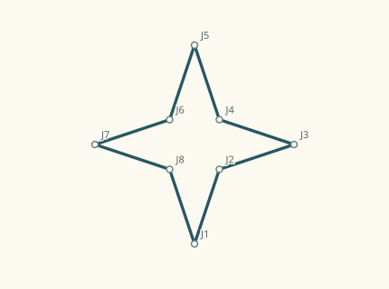
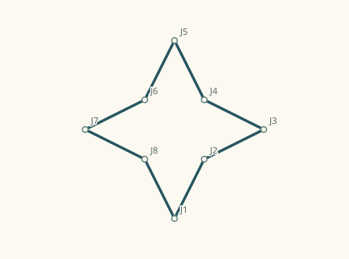
Outward and inward turns are distributed around a closed contour rather than along one decorated side.
J08 · Contour with a missing passage
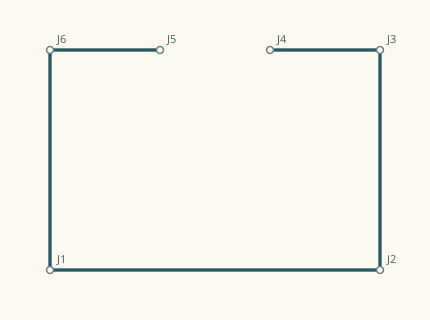
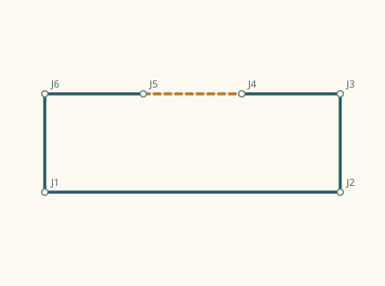
Two cursor paths meet at a declared site, leaving a gap along the upper side. No assumed closing stroke is present in the source.
J09 · Almost regular contour with a lower tab
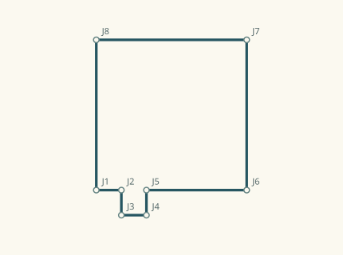
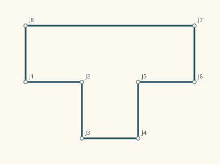
One small outward return sits toward the lower left. Any simpler symmetric context must retain this actual deviation.
J10 · Translated disconnected contours
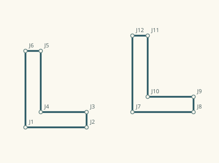
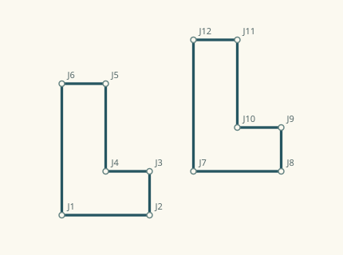
A native translation places a second copy. No connection or recurrence claim is supplied as receiver evidence.
J11 · Reflected disconnected contours
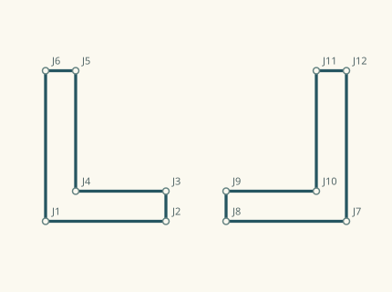
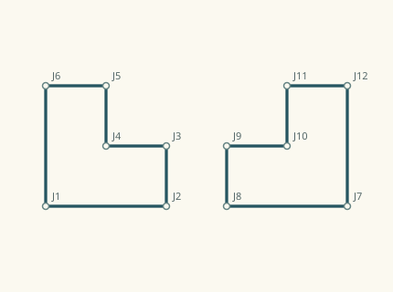
A direction substitution reflects the second native route before translating it. The published source contains the resulting passages, without a supplied mirror verdict.
J12 · Four turned polygon lobes
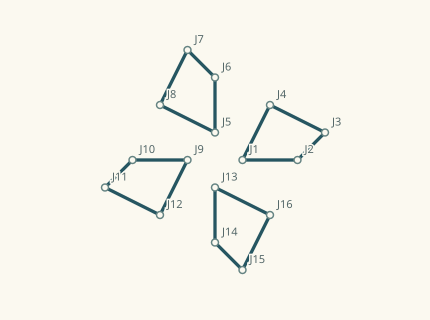
Four applications of the same native quarter-turn substitution return to the original direction basis. Each lobe is closed; no radial or symmetry classification is published.
J13 · Three-arm physical junction
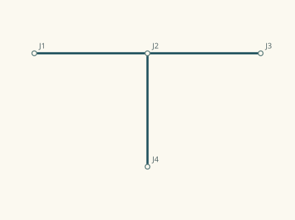
The transverse path and the stem share an actual declared site. This source intentionally has open ends rather than an enclosed area.
J14 · Four-arm physical junction
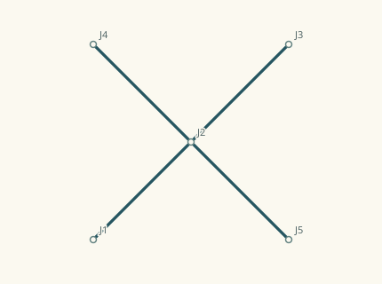
Both diagonal paths explicitly stop and continue at the central role. Accepted native seams make that role one actual site; it is not inferred merely from an ink crossing.
J15 · Learning case L00016
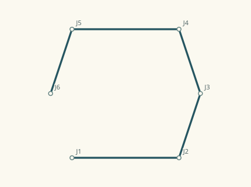
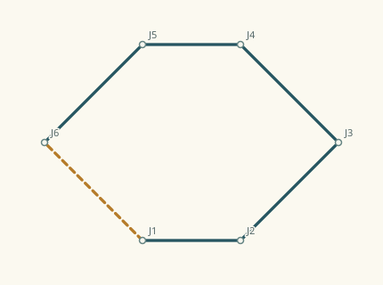
The exact complete teacher unit from the earlier learning curriculum, re-executed at the same descriptor and published independently. Its factory history and intended concept are withheld.
J16 · Learning case L00064
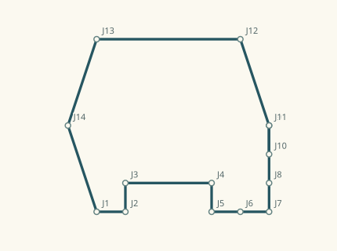
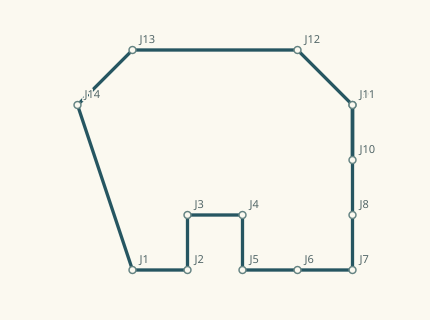
The exact complete teacher unit from the earlier learning curriculum, re-executed at the same descriptor and published independently. Its factory history and intended concept are withheld.